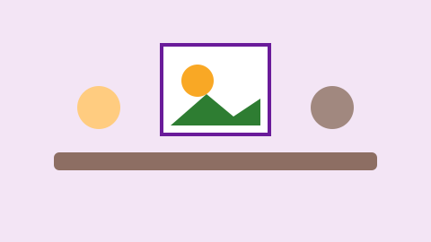
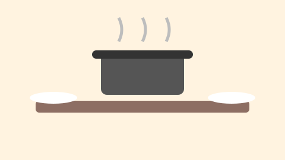

Reforço Escolar
Aulas de português e matemática no contraturno para crianças de 6 a 14 anos.
Conheça as frentes de atuação do Instituto Semear Futuro.
Aulas de português e matemática no contraturno para crianças de 6 a 14 anos.

Música, artes e leitura para fortalecer a autoestima e a criatividade.

Refeições nutritivas diárias para crianças e famílias atendidas.